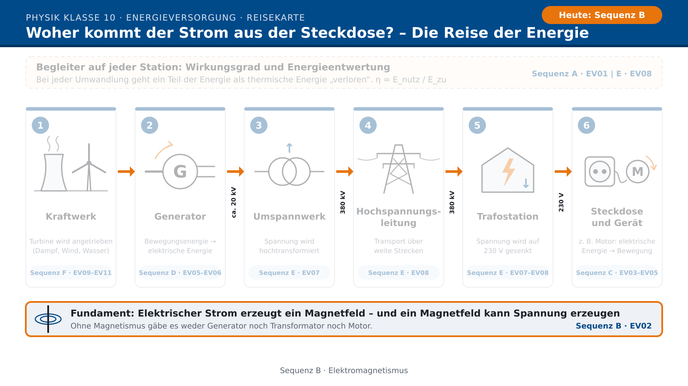
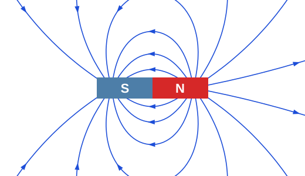

A1a · Kurzquiz Magnetismus
▾Beantworte die sechs Fragen. Du bekommst sofort eine Rückmeldung. Notiere in OneNote die Fragen, bei denen du unsicher warst, und schreibe die richtige Antwort mit einer kurzen Begründung auf.
Einschätzung:

Beantworte die sechs Fragen. Du bekommst sofort eine Rückmeldung. Notiere in OneNote die Fragen, bei denen du unsicher warst, und schreibe die richtige Antwort mit einer kurzen Begründung auf.
a) Skizziere in OneNote das Feldlinienbild eines Stabmagneten. Beschrifte Nord- und Südpol und zeichne die Richtung der Feldlinien mit Pfeilen ein.
b) Zeichne eine Kompassnadel an drei verschiedenen Stellen in dein Bild ein. Wie richtet sie sich jeweils aus?
c) Nenne drei Eigenschaften von Feldlinien.
Am Anfang der Stunde hast du gesehen, wie sich Eisenfeilspäne um einen Stabmagneten ordnen. Jeder Span wird selbst zu einem kleinen Magneten und richtet sich aus. Die Linien, die dabei entstehen, sind die Feldlinien.
Man hat festgelegt: Außerhalb des Magneten verlaufen die Feldlinien vom Nordpol zum Südpol. Eine Kompassnadel richtet sich entlang der Feldlinie aus – ihr Nordpol zeigt in Pfeilrichtung.
Denke an diese Fragen: Können sich zwei Feldlinien kreuzen? Wo liegen die Linien dicht beieinander – und was bedeutet das? Haben Feldlinien einen Anfang und ein Ende?

b) Die Kompassnadel richtet sich überall entlang der Feldlinie aus; ihr Nordpol zeigt in Pfeilrichtung. Neben der Mitte des Magneten zeigt sie parallel zum Magneten in Richtung Südpol, an den Polen zeigt sie auf den Südpol bzw. vom Nordpol weg.
c) Feldlinien verlaufen außen vom Nord- zum Südpol. Sie schneiden sich nie. Wo sie dicht liegen (an den Polen), ist das Magnetfeld besonders stark. Sie sind geschlossen – im Inneren des Magneten laufen sie vom Süd- zum Nordpol weiter.
Hans Christian Oersted führte 1820 einen Versuch durch, der die Physik verändert hat. Ein gerader Draht liegt in Nord-Süd-Richtung direkt über einer Magnetnadel. Der Draht ist an eine Batterie angeschlossen.
🎯 Ziel: genau beobachten und eine Vermutung aufstellena) Skizziere den Versuchsaufbau.
b) Beschreibe, was mit der Magnetnadel passiert,
c) Stelle eine Vermutung auf: Warum dreht sich die Magnetnadel?
Achte auf die Richtung, in die sich der Nordpol der Nadel dreht (nach Osten oder nach Westen?), und wie weit er sich dreht. Vergleiche immer mit der Lage ohne Strom.
„Ohne Strom zeigt die Magnetnadel …“ · „Sobald der Stromkreis geschlossen ist, …“ · „Nach dem Umpolen dreht sich der Nordpol der Nadel …“ · „Liegt die Nadel über dem Draht, …“
Was kann eine Magnetnadel überhaupt ablenken? Du kennst aus der Wiederholung nur eine Ursache. Was muss also in der Nähe des Drahtes entstehen, wenn Strom fließt?
b) Ohne Strom zeigt die Nadel nach Norden, parallel zum Draht. Sobald Strom fließt, dreht sie sich und stellt sich fast quer zum Draht. Öffnet man den Stromkreis, dreht sie zurück nach Norden. Nach dem Umpolen schlägt sie in die entgegengesetzte Richtung aus. Liegt die Nadel über dem Draht, dreht sie sich ebenfalls in die entgegengesetzte Richtung.
c) Eine Magnetnadel wird nur von einem Magnetfeld abgelenkt. Also erzeugt der elektrische Strom im Draht ein Magnetfeld. Seine Richtung hängt von der Stromrichtung ab.
Ihr seid die Sprecher eines Erklärvideos für eine 8. Klasse. Das Video zeigt den Oersted-Versuch und erklärt mit einem Modell, warum sich die Magnetnadel dreht – aber der Ton fehlt. Das Video (1:45 Min.) findet ihr im Kursnotizbuch in der Inhaltsbibliothek auf der Seite EV02 Video.
🎯 Ziel: ein fachlich richtiges, verständliches Erklärvideoa) Seht euch das Video zweimal ohne Unterbrechung an.
b) Schreibt in die Skript-Tabelle, was in jedem Abschnitt gesagt werden soll. Verwendet die Fachbegriffe. Euer Text muss in die Zeit passen – lest ihn laut zur Probe.
c) Klärt, wer welchen Abschnitt spricht.
| Zeit | Was man sieht | Unser Sprechtext | Wer? |
|---|---|---|---|
| 0:00–0:08 | Titel | ||
| 0:08–0:13 | Aufbau | ||
| 0:13–0:26 | Strom ein und aus | ||
| 0:26–0:51 | Batterie wird umgepolt | ||
| 0:51–1:25 | Modell: Blick in den Leiter | ||
| 1:25–1:40 | Modell: Feldlinien | ||
| 1:40–1:45 | Abspann |
Fachbegriffe abhaken: ☐ geschlossener Stromkreis ☐ gerader Leiter ☐ Magnetnadel ☐ Ablenkung ☐ Stromrichtung ☐ Plus-/Minuspol ☐ Elektronen ☐ Modell ☐ Magnetfeld ☐ Feldlinien ☐ kreisförmig
„Hier seht ihr …“ · „Sobald der Stromkreis geschlossen ist, …“ · „Wenn man die Batterie umdreht, …“ · „Aber warum …? Dazu schauen wir in den Leiter hinein: …“ · „Die Feldlinien …“ · „Unser Fazit: …“
0:08–0:13: „Hier seht ihr den Aufbau: eine Batterie, einen geraden Leiter und darunter eine Magnetnadel. Die Nadel zeigt nach Norden, in dieselbe Richtung wie der Draht.“
0:13–0:26: „Jetzt wird der Stromkreis geschlossen. Die Magnetnadel dreht sich und stellt sich fast quer zum Leiter! …“
Wie geht es weiter, wenn die Batterie umgedreht wird? Und was zeigt das Modell?
| Zeit | Sprechtext |
|---|---|
| 0:00–0:08 | „Hallo! Wir zeigen euch heute einen berühmten Versuch: den Oersted-Versuch von 1820.“ |
| 0:08–0:13 | „Hier seht ihr den Aufbau: eine Batterie, einen geraden Leiter – also einen Draht – und darunter eine Magnetnadel. Die Nadel zeigt nach Norden, in dieselbe Richtung wie der Draht.“ |
| 0:13–0:26 | „Jetzt wird der Stromkreis geschlossen. Die Magnetnadel dreht sich und stellt sich fast quer zum Leiter! Wird der Stromkreis wieder geöffnet, dreht sie zurück nach Norden.“ |
| 0:26–0:51 | „Nun wird die Batterie umgedreht: Plus- und Minuspol sind vertauscht, der Strom fließt in die andere Richtung. Wir schließen den Stromkreis wieder – die Nadel schlägt jetzt in die andere Richtung aus. Die Richtung der Ablenkung hängt also von der Stromrichtung ab.“ |
| 0:51–1:25 | „Aber warum passiert das? Wir schauen in den Leiter hinein. Im Draht gibt es viele frei bewegliche Elektronen. Ist der Stromkreis geschlossen, bewegen sie sich durch den Leiter – vom Minuspol zum Pluspol. Die bewegten Elektronen erzeugen ein Magnetfeld, und dieses Magnetfeld lenkt die Kompassnadel ab.“ |
| 1:25–1:40 | „Hier sind die Magnetfeldlinien eingezeichnet: Sie bilden Kreise um den Leiter. Die Kompassnadel richtet sich entlang dieser Feldlinien aus. Kehrt man die Stromrichtung um, ändert sich auch die Richtung der Feldlinien – deshalb schlägt die Nadel dann andersherum aus.“ |
| 1:40–1:45 | „Unser Fazit: Ein elektrischer Strom erzeugt ein Magnetfeld – das ist der Oersted-Versuch.“ |
a) Nehmt euren Sprechtext in iMovie als Voiceover auf. Benutzt Kopfhörer mit Mikrofon und sucht euch einen ruhigen Platz.
b) Exportiert das fertige Video und fügt es auf eurer OneNote-Seite EV02-A3 ein.
c) Prüft euer Video mit der Checkliste unten, bevor ihr es abgebt.
1Video aus OneNote speichern (lange tippen → „Speichern“ bzw. in „Dateien“ sichern).
2iMovie öffnen → Neues Projekt → Film → Video auswählen → Film erstellen.
3Den Abspielkopf (weiße Linie) an den Anfang des Abschnitts schieben.
4Auf + tippen und Voiceover (Mikrofon) wählen → Aufnehmen. Nach dem Countdown sprechen, dann Stopp → Übernehmen oder Wiederholen.
5So Abschnitt für Abschnitt weiter.
Mikrofon des Kopfhörers nah an den Mund, nicht direkt anpusten. Langsam und deutlich sprechen. Lieber einen Abschnitt neu aufnehmen als einen Versprecher stehen lassen. Wartet, bis es um euch herum ruhig ist.
In iMovie auf Fertig tippen → Teilen-Symbol → Video sichern. In OneNote auf der Seite EV02-A3: Einfügen → Datei (oder Video aus „Fotos“) → euer Video auswählen.
Bei der Premiere in der nächsten Stunde geben sich die Gruppen Rückmeldung nach diesen Kriterien: fachlich richtig (40 %), Fachbegriffe (25 %), passt zum Bild (20 %), verständlich gesprochen (15 %).
Öffne die Simulation S2.
🎯 Ziel: die Richtung des Magnetfelds mit der Linken-Hand-Regel bestimmena) Ansicht „Feldlinien (Leiter von vorne)“: Schließe den Stromkreis. Beschreibe, wie sich die Kompassnadeln um den Leiter ausrichten. Skizziere das Feldlinienbild.
b) Wie ändert sich das Bild, wenn die Elektronen in die andere Richtung fließen?
c) Ansicht „Oersted-Versuch (von oben)“: Die Elektronen fließen nach Norden, die Magnetnadel liegt unter dem Leiter. Sage mit der Linken-Hand-Regel voraus, in welche Richtung (Osten oder Westen) sich der Nordpol der Nadel dreht. Überprüfe deine Vorhersage mit der Simulation.
d) Erkläre, warum die Nadel in die Gegenrichtung ausschlägt, wenn sie über dem Leiter liegt.
Umfasse den Leiter mit der linken Hand. Der Daumen zeigt in die Bewegungsrichtung der Elektronen (vom Minus- zum Pluspol). Die gekrümmten Finger zeigen die Richtung der Feldlinien. In der Simulation kannst du die Regel einblenden.
Lege einen Stift als „Leiter“ vor dich auf den Tisch, Spitze nach Norden. Umfasse ihn mit der linken Hand, Daumen zur Spitze. Wohin zeigen deine Fingerspitzen unter dem Stift – nach links oder nach rechts? Genau dorthin dreht sich der Nordpol der Nadel.
Die Feldlinien sind Kreise um den Leiter. Auf einem Kreis zeigt die Richtung oben genau entgegengesetzt zur Richtung unten – denk an ein Rad, das sich dreht: Oben läuft es nach vorne, unten nach hinten.
a) Ohne Strom zeigen alle Nadeln nach Norden. Mit Strom stellen sie sich so ein, dass sie zusammen Kreise um den Leiter bilden. Die Feldlinien sind konzentrische Kreise um den Leiter; nahe am Leiter ist das Feld stärker.
b) Alle Nadeln drehen sich um 180°: Die Feldlinien haben die entgegengesetzte Richtung (Elektronen aus dem Bild heraus → im Uhrzeigersinn, in das Bild hinein → gegen den Uhrzeigersinn).
c) Daumen nach Norden: Unter dem Leiter zeigen die Finger nach Osten. Der Nordpol der Nadel dreht sich nach Osten.
d) Die Feldlinien umlaufen den Leiter kreisförmig. Über dem Leiter zeigen sie genau in die Gegenrichtung wie unter dem Leiter – deshalb dreht sich die Nadel andersherum.